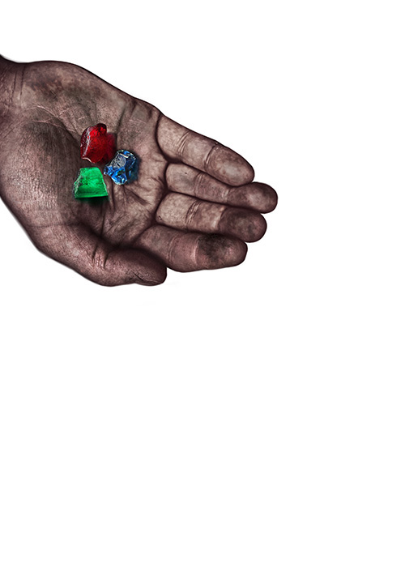
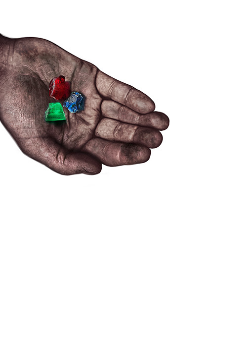

I'm obsessed with some objects. Their shape, color, texture, their temperature, the moments they prompted: working women supporting each other or brigning together people to eat. And there's other type of objects. Those that we might encounter in digital space, which I can't stop thinking about. Some reinforce logics of colonialism by inscribing their symbolism in websites and online documents. Those SVG files of crowns, royality, gems and whatnot -treated as program-objects through folds/lines of code execute another kind of power and propagate other forms of (subtle?) systematic violences just as their homologous physical objects did in the past. Those also obsses me.
 
